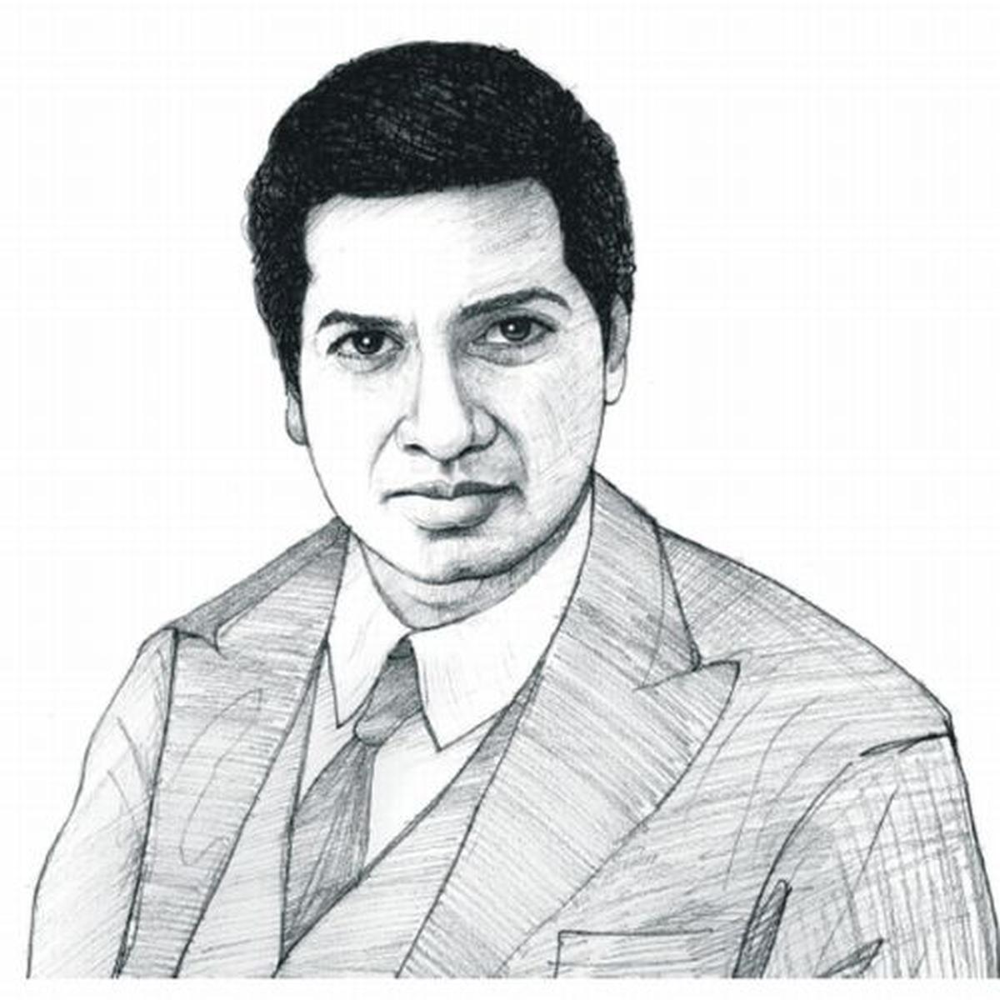
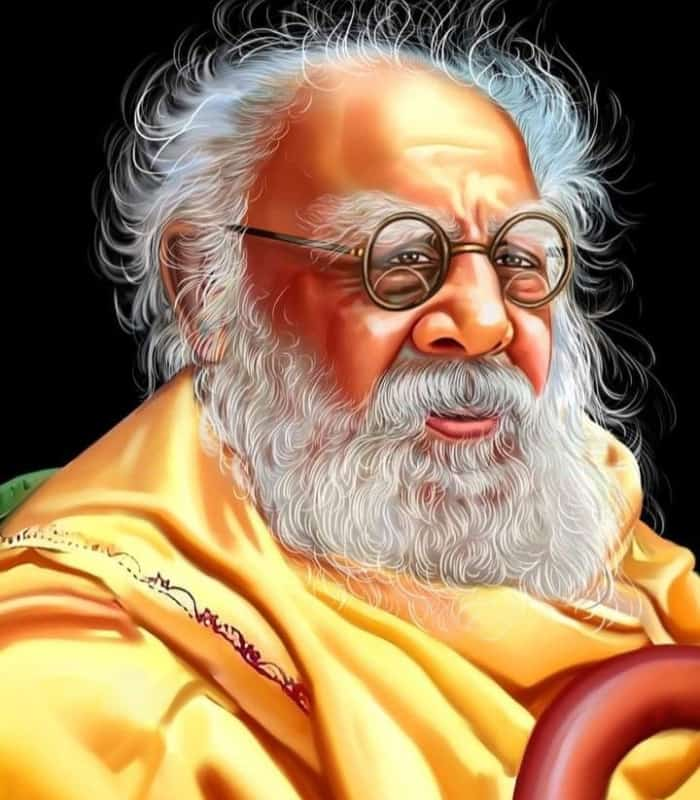
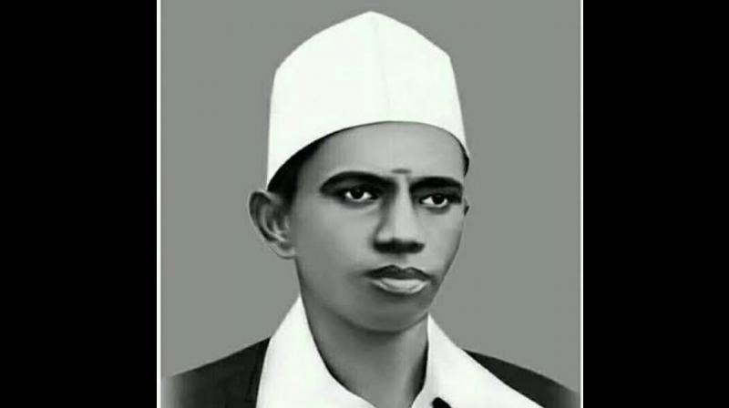

| Ramanuja ([ɽaːmaːnʊdʑɐ]; Middle Tamil: Rāmāṉujam; Classical Sanskrit: Rāmānuja; c. 1077[b] – 1157), also known as Ramanujacharya, was an Indian Hindu philosopher, guru and social reformer. He is one of the most important exponents of the Sri Vaishnavism tradition in Hinduism.[7][9] His philosophical foundations for devotional practice were influential in the Bhakti movement.[10][11][12] Ramanuja's guru was Yādava Prakāśa, a scholar who, traditionally, is said to have belonged to the Advaita Vedānta tradition,[13] but probably was a Bhedabheda scholar.[14] Sri Vaishnava tradition holds that Ramanuja disagreed with his guru and the non-dualistic Advaita Vedānta, and instead followed in the footsteps of Tamil Alvārs tradition, the scholars Nāthamuni and Yamunāchārya.[10] Ramanuja is famous as the chief proponent of Vishishtadvaita school of Vedānta,[15][16] and his disciples were likely authors of texts such as the Shatyayaniya Upanishad.[13] Ramanuja himself wrote influential texts, such as Sanskrit bhāsyas on the Brahma Sutras and the Bhagavad Gita.[17] |
|
Erode Venkatappa Ramasamy (17 September 1879 – 24 December 1973), commonly known as Periyar,[a] was a Tamil social activist and politician. He was the organizer of the Self-Respect Movement and Dravidar Kazhagam and is considered the architect of Dravidian politics. Periyar joined the Indian National Congress in 1919 and participated in the Vaikom Satyagraha, during which he was imprisoned twice. He resigned from the Congress in 1925, believing that they only served the interests of Brahmins. From 1929 to 1932, he toured British Malaya, Europe and the Soviet Union which later influenced his Self-Respect Movement in favor of caste equality. In 1939, he became the head of the Justice Party,[b] which he transformed into a social organisation named Dravidar Kazhagam in 1944. The party later split with one group led by C. N. Annadurai forming the Dravida Munnetra Kazhagam (DMK) in 1949. While continuing the Self-Respect Movement, he advocated for an independent Dravida Nadu (land of the Dravidians). Periyar promoted the principles of rationalism, self-respect, women's rights and eradication of caste. He opposed the exploitation and marginalisation of the non-Brahmin Dravidian people of South India and the imposition of what he considered Indo-Aryan India. Since 2021, the Indian state of Tamil Nadu celebrates his birth anniversary as 'Social Justice Day'. His supporters hail him as a champion of social equality whereas critics denounce him for being a separatist. |

|

|
Tiruppur Kumaran also known as Kodi Kaatha Kumaran (4 October 1904 – 11 January 1932) was an Indian revolutionary and freedom fighter who participated in the Indian independence movement. He held on to the Indian tricolor flag even during his death. Kumaran was born as Kumaraswamy Mudaliyar. His parents were Nachimuthu Mudaliyar and Karuppaayi Amma.[2][3] He founded the Desa Bandhu Youth Association and led protests against the British. He died from injuries sustained from a police assault on the banks of Noyyal River in Tiruppur during a protest march against the British government on 11 January 1932. At the time of his death, he was holding the flag of the Indian nationalists, which had been banned by the British giving rise to the epithet kodi Kaatha Kumaran in Tamil which means "Kumaran who protected the flag |